4 Missing data
Data imputation summary
- Data source:
- Domain: Fisheries Commodities
- Input data:
fishtrade_built_data
The imputation is performed at the partner level, i.e, the shipments are aggregated before the imputation.
- There are 16 methods to impute the missing weights.
- 8 methods perform the imputation at Tariff Line level.
- 8 methods perform the imputation at 6 digits (HS) level.
Some automatic imputations can not be achieved. The main reason for this is there is no enough information to execute any method robustly. It is necessary the user’s intervention (manual imputation)
4.1 Mathematical conversion
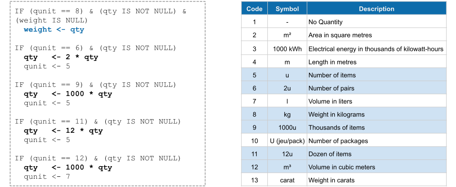
Figure 4.1: Imputation module: mathematical conversions
4.2 Partially Agreggation
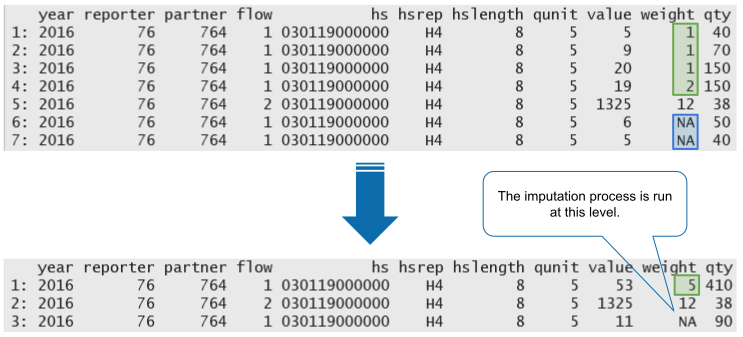
Figure 4.2: Imputation module: partially aggregation
4.3 Methods
4.3.1 Helper Tables
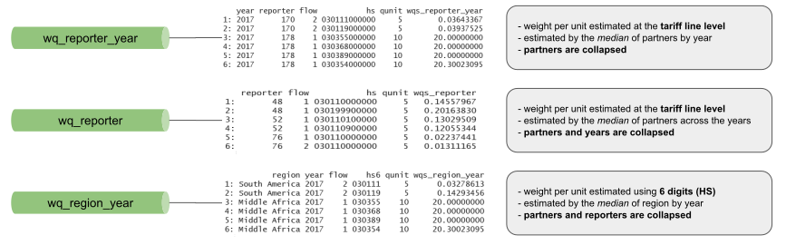
Figure 4.3: Helper Tables: 01
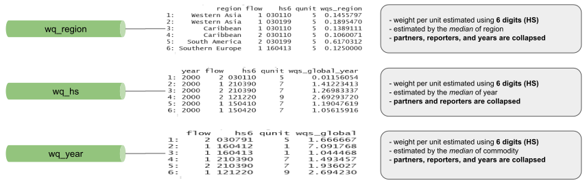
Figure 4.4: Helper Tables: 02
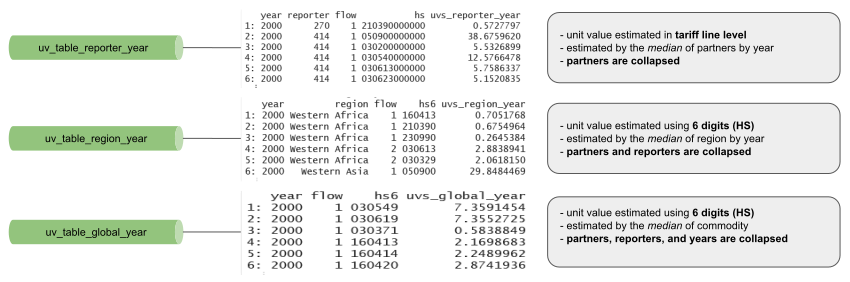
Figure 4.5: Helper Tables: 03
4.3.2 Estimate weight per unit
4.3.2.1 General Approach
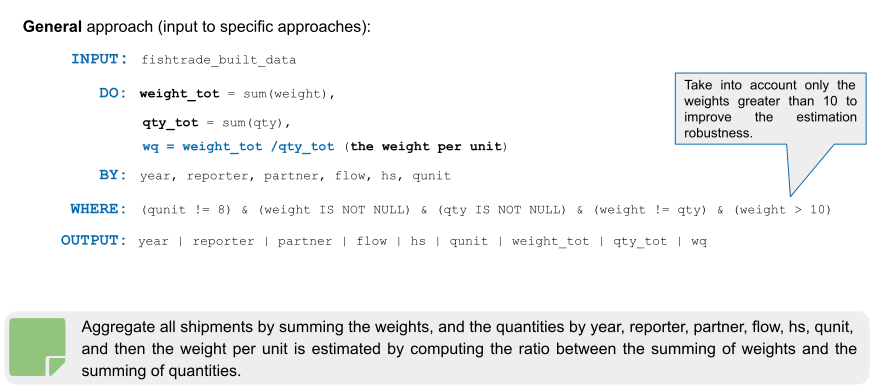
Figure 4.6: Helper Tables: 03
4.3.2.2 Reporter - Year
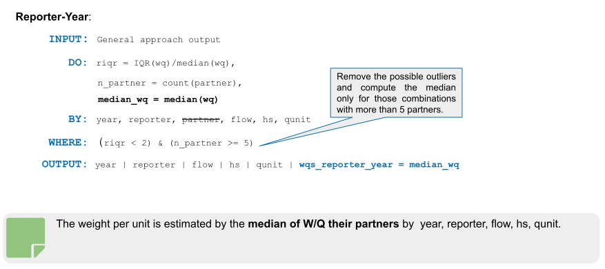
Figure 4.7: Helper Tables: 03
4.3.2.3 Reporter
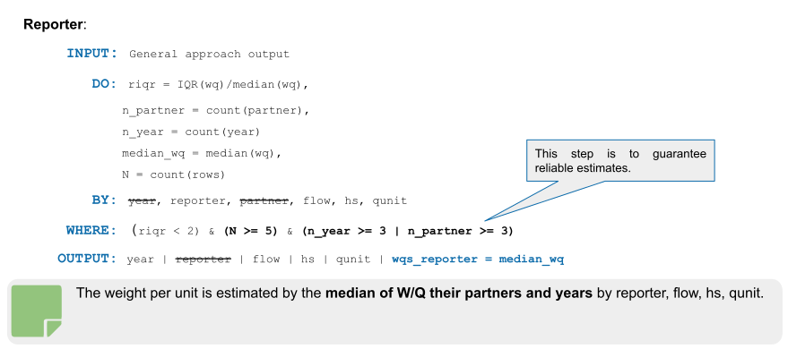
Figure 4.8: Helper Tables: 03
4.3.2.4 Region-Year
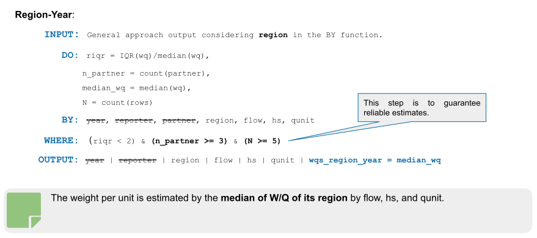
Figure 4.9: Helper Tables: 03
4.3.2.5 Global-Year
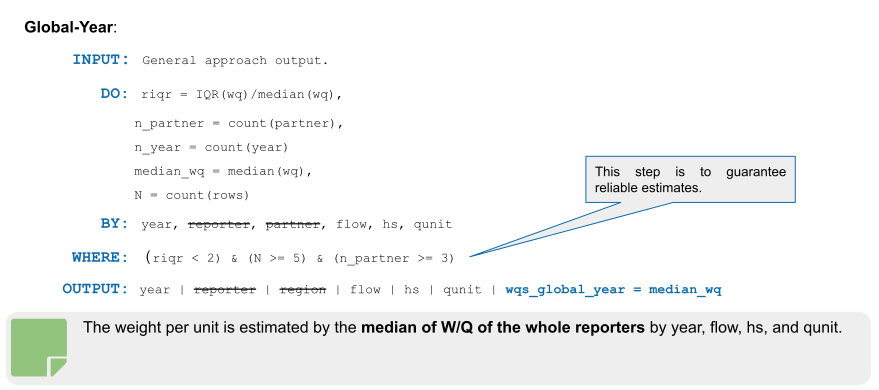
Figure 4.10: Helper Tables: 03
4.3.2.6 Global
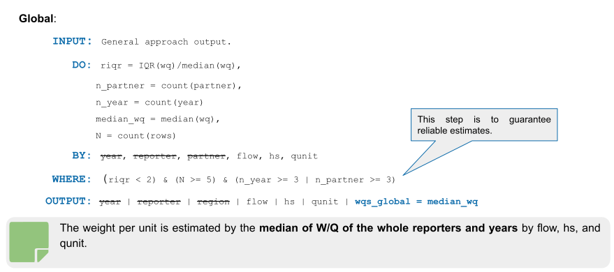
Figure 4.11: Helper Tables: 03
4.3.3 Imputation by partially reported weight
Figure 4.12: Helper Tables: 03